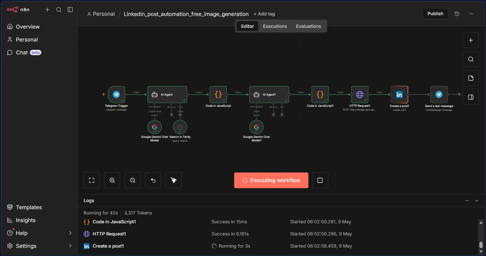
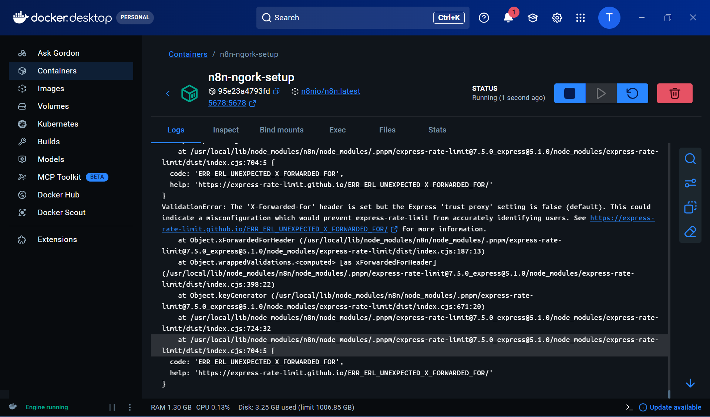
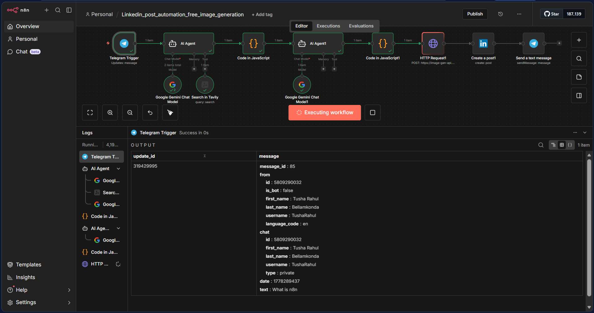
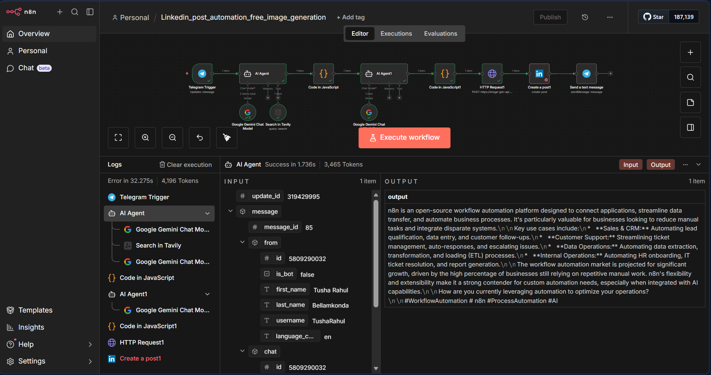
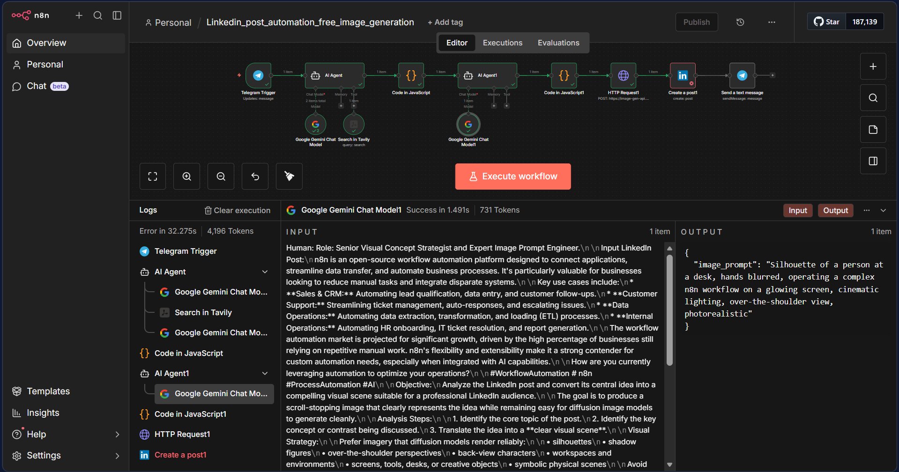
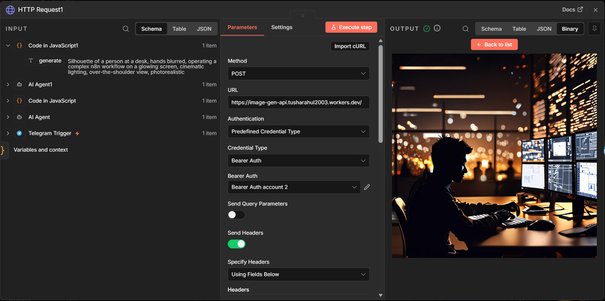
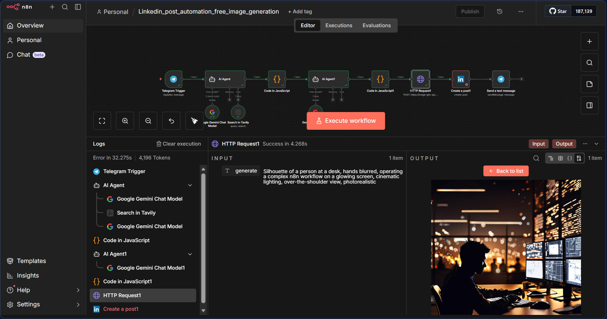
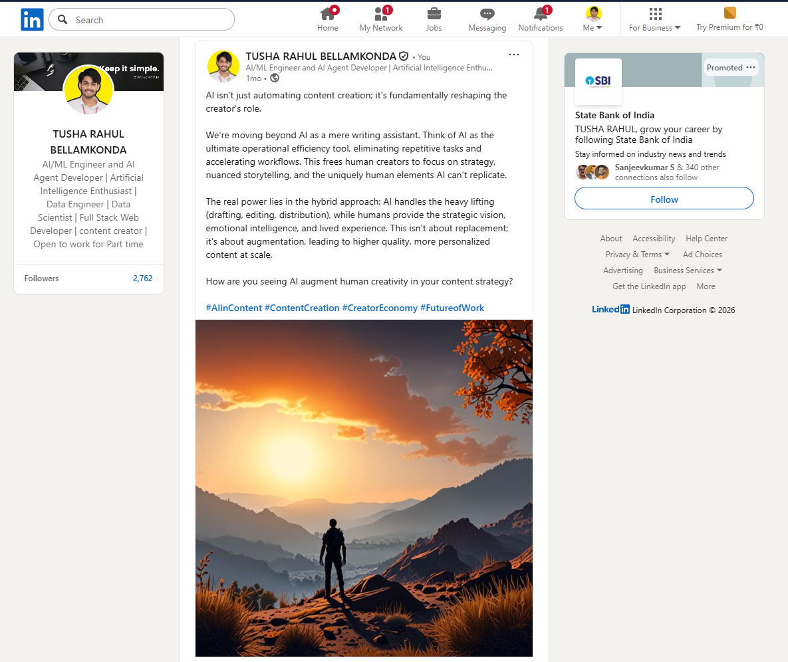
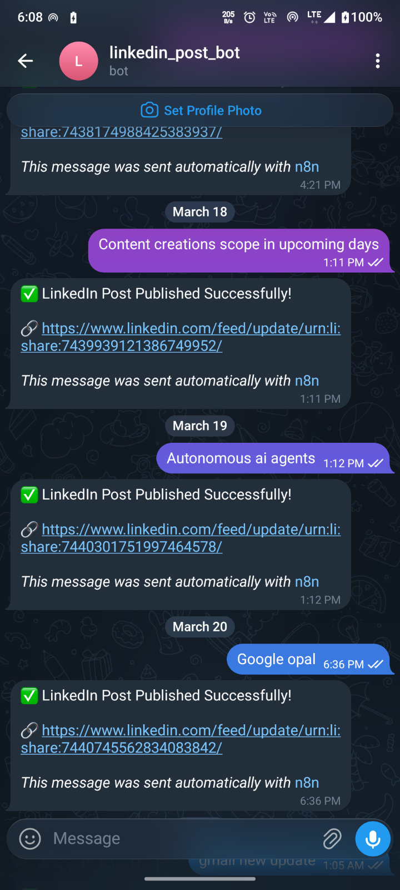
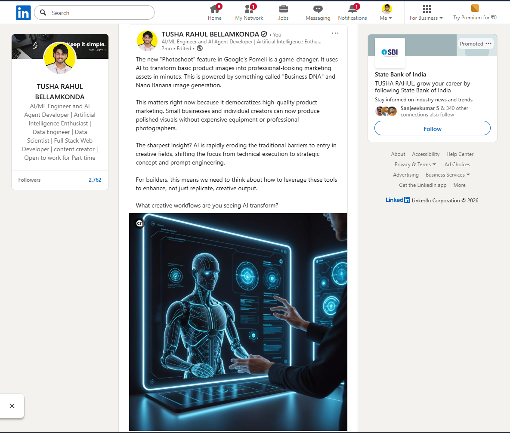

Overview
This project is an end-to-end autonomous LinkedIn content generation and publishing system built using n8n, AI agents, Gemini LLMs, Tavily Search, Cloudflare Workers, and LinkedIn APIs.
The system acts as an autonomous AI content engine for professional LinkedIn publishing, seamlessly transforming a raw Telegram message into a fully researched, visually stunning, and published LinkedIn post.

System Architecture
The system was designed as a modular multi-agent AI orchestration pipeline using n8n as the workflow engine. The architecture combines autonomous AI reasoning, real-time web research, serverless image generation, and automated social publishing into one scalable workflow.
Infrastructure Setup
The workflow was deployed using a lightweight self-hosted infrastructure stack focused on cost efficiency, flexibility, and rapid experimentation.
Self-Hosted n8n Deployment
n8n was deployed locally using Docker containers to provide isolated runtime environments, rapid deployment, scalable orchestration, and local customization. Docker enabled quick experimentation with AI agents without depending on managed automation platforms.
ngrok Tunneling
ngrok was used to expose local webhook endpoints securely to external services such as the Telegram Bot API and LinkedIn integrations. This enabled real-time event-driven automation workflows while running the orchestration engine locally.

Environment variables were used for secure API management including Gemini API keys, LinkedIn credentials, Telegram bot tokens, and Cloudflare bearer authentication. This ensured modular and secure workflow configuration across multiple AI services.
Zero-Cost AI Infrastructure Strategy
One of the primary goals of this project was to build a scalable AI content automation pipeline using completely free-tier and serverless infrastructure. The workflow architecture intentionally minimized infrastructure costs while maintaining production-style orchestration capabilities.
- Self-hosted n8n via Docker
- ngrok free secure tunneling
- Gemini free-tier APIs
- Cloudflare Workers serverless deployment
- Cloudflare AI image generation models
- Telegram Bot API integrations
This enabled autonomous AI workflow orchestration without relying on expensive commercial AI automation platforms.
Step 1-3: Trigger & Content Pipeline
The workflow begins from a simple user input and evolves into a structured LinkedIn post through real-time research.
The workflow starts when a user sends a topic through a Telegram bot. For example, sending "AI agents replacing SaaS workflows" becomes the main topic payload.

The topic is passed to a Gemini 2.5 Flash Lite agent integrated with Tavily Search. It performs real-time research, gathers strategic insights, and generates an engaging, research-backed LinkedIn post focusing on thought leadership rather than just summarizing news.

A custom JavaScript node cleans and normalizes the AI output. It extracts the raw post, the target audience, the angle, and the visual prompt into structured JSON, ensuring downstream stability by removing markdown wrappers.
Step 4-6: Visual AI & Serverless Infrastructure
Instead of relying on paid image APIs, this pipeline builds custom visual prompts and utilizes Cloudflare's edge infrastructure.
A second Gemini agent acts as a visual reasoning expert. It analyzes the emotional tone and narrative structure of the post, converting it into a diffusion-optimized cinematic prompt (e.g., preferring silhouettes and volumetric lighting to avoid common AI generation failures).

Another JavaScript node extracts the finalized image prompt, cleaning JSON wrappers and formatting artifacts, creating a strict payload ready for the API.
This is the technical core of the visual pipeline. A completely serverless REST API was built using Cloudflare Workers and Cloudflare's AI image models. It accepts the prompt dynamically via bearer-token authentication and returns a LinkedIn-compatible binary image entirely cost-free and at edge speeds.


Step 7-8: Publishing & Notification
The n8n LinkedIn integration node securely uploads the generated image media and attaches the AI-crafted text. It automatically publishes the content to the public LinkedIn feed.

Upon successful deployment, the workflow loops back to Telegram, sending a confirmation message containing the live LinkedIn post URL, providing immediate automated feedback.

Live Verified AI Posts
The following LinkedIn posts were fully generated and published autonomously by this exact n8n orchestration pipeline:
Engineering Challenges Solved
The project required solving multiple engineering and orchestration challenges across AI reasoning, workflow reliability, and API synchronization.
Multi-Agent Workflow Reliability
Ensuring stable orchestration between multiple AI agents required structured JSON normalization and fallback parsing logic between workflow stages.
AI Output Parsing Stability
LLM outputs occasionally contained malformed JSON and markdown artifacts. Custom JavaScript parsing nodes were implemented to sanitize and normalize responses before downstream processing.
Diffusion Prompt Optimization
Image prompts were optimized specifically for diffusion-based generation models to reduce broken anatomy, visual artifacts, and cluttered scenes. The system preferred cinematic compositions, silhouettes, and environment-driven framing for more reliable outputs.
Serverless Edge Synchronization
Cloudflare Workers were integrated as lightweight edge APIs to reduce dependency on expensive third-party media APIs. The workflow required tight synchronization across Telegram events, AI agents, HTTP APIs, LinkedIn publishing, and asynchronous image generation while maintaining reliable execution flow.
Workflow Metrics
| Metric | Value |
|---|---|
| Average Workflow Completion | 25–45 seconds |
| AI Research Generation | 5–8 seconds |
| Image Generation Latency | 8–15 seconds |
| LinkedIn Publishing Time | 2–5 seconds |
| Workflow Success Rate | ~95% |
| AI Services Integrated | 5+ |
| Automation Steps | 8-stage pipeline |
Future Improvements
Planned improvements for the system include:
- Autonomous scheduled publishing
- AI trend monitoring
- Multi-platform social publishing
- Post engagement analytics
- AI-generated carousel creation
- Vector-memory style consistency
- AI performance feedback loops
- Autonomous topic discovery
Tech Stack
n8n
End-to-end automation orchestration
Gemini 2.5 Flash Lite
Multi-agent LLM reasoning
Cloudflare Workers
Custom Serverless Image API
Tavily Search
Real-time web research integration
Telegram Bot
User trigger and notifications
LinkedIn API
Automated professional publishing
Technical Highlights
Infrastructure Gallery
Click any image to explore the automation workflow, infrastructure nodes, and generated content.
